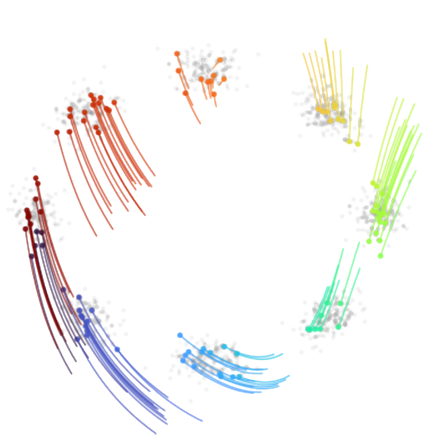
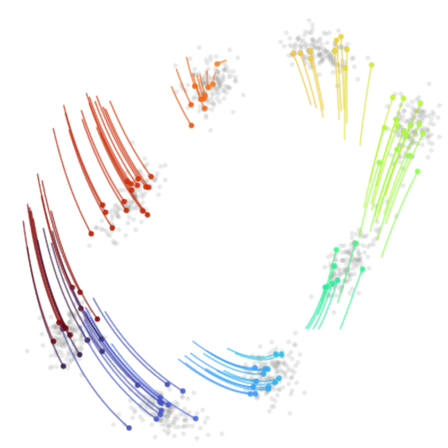
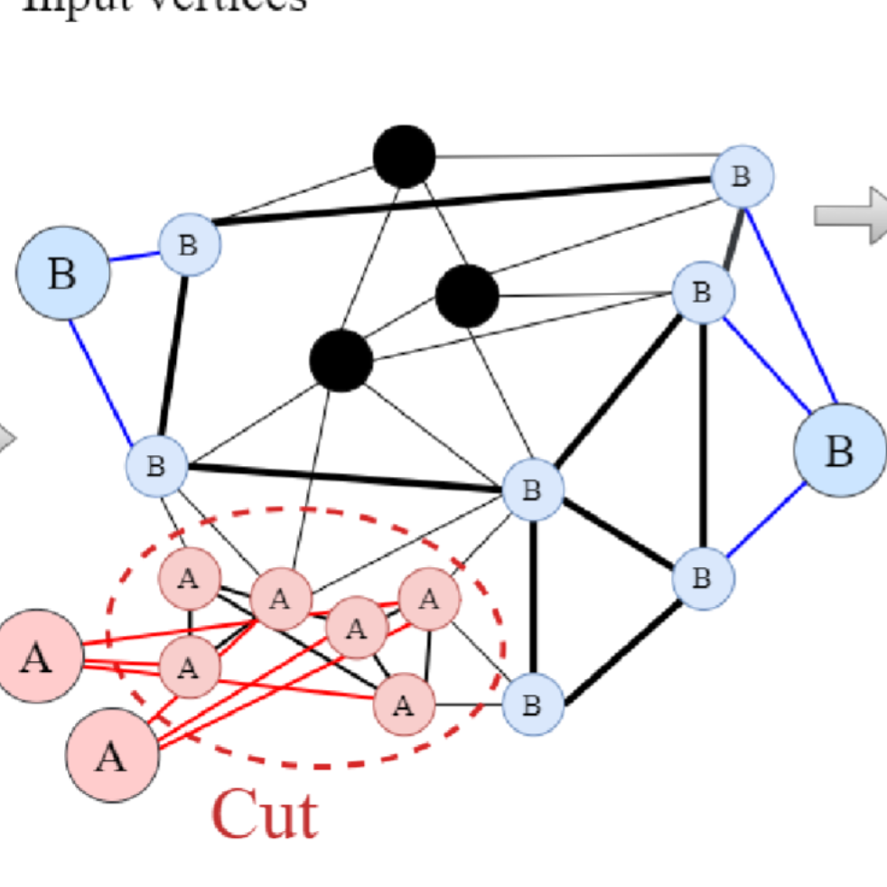
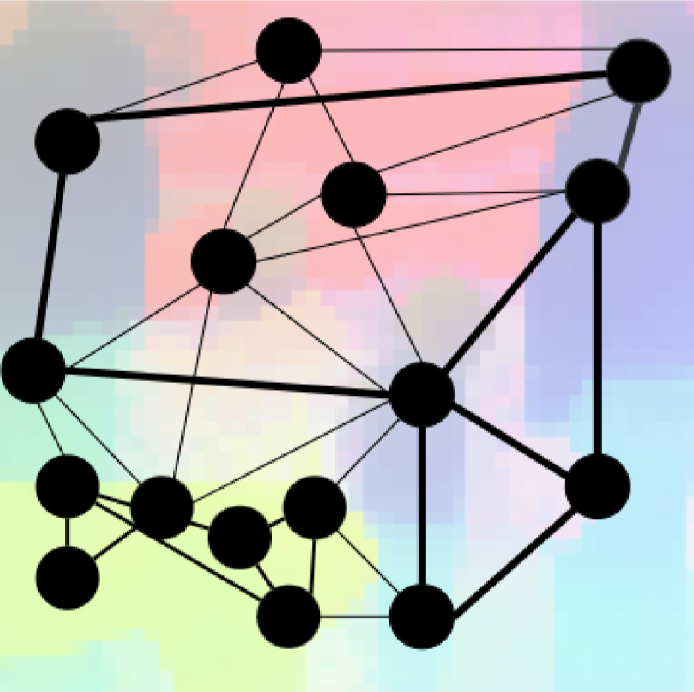
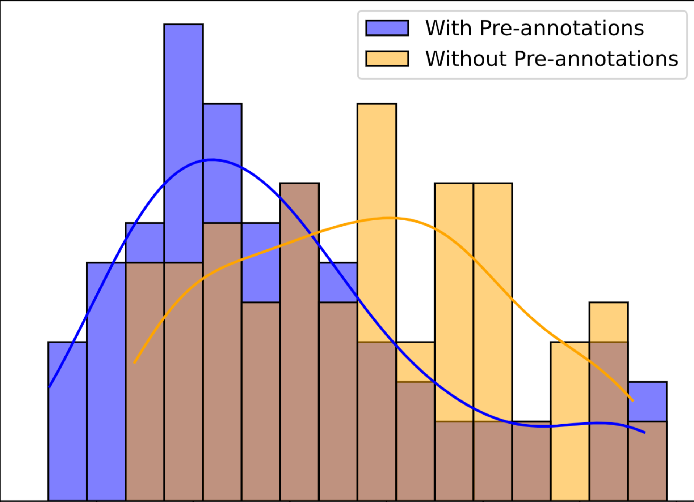
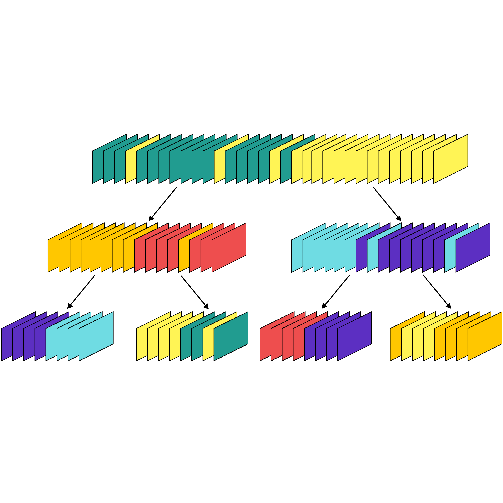
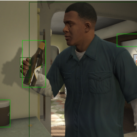
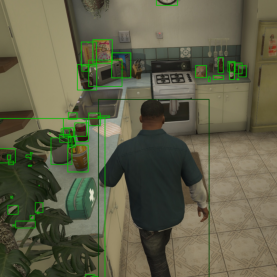
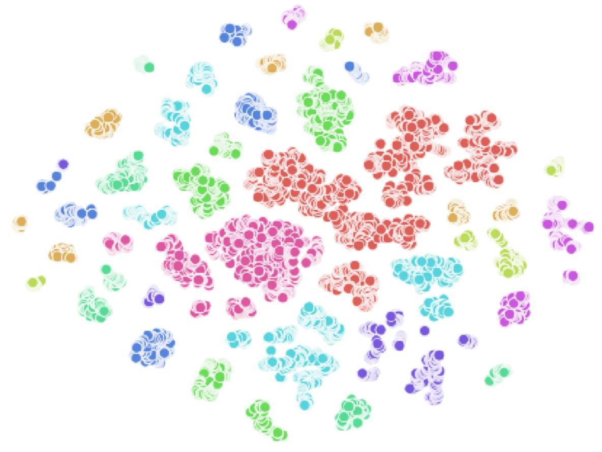
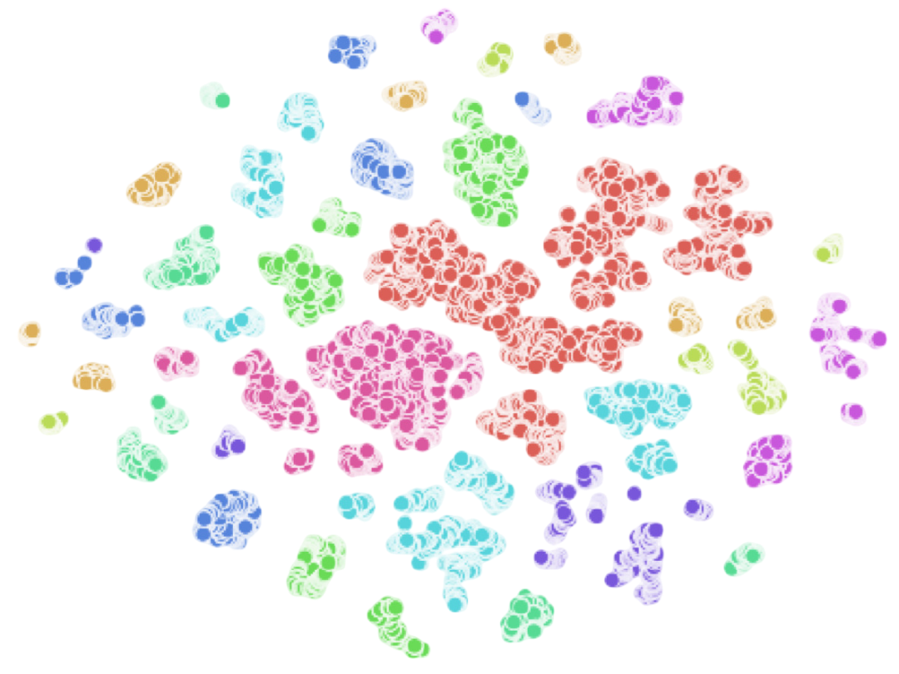

ReCoCo: From Patches to Compositions for Visual Representation Learning
arXiv, 2026
Region-level self-supervision over compositions of prototype predictions, for stronger dense features.
$ whoami
I am a Ph.D student in Computer Vision at UPM, supervised by Dr. José Luis Blanco-Murillo, and, since September 2022, member of GAPS research group.
I'm interested in the principles of self-supervised representation learning for image and video foundation models, aiming to construct latent spaces that robustly encode semantics and spatiotemporal dynamics. I leverage the geometry of the resulting feature manifold to analyze data structure and propagate sparse relational supervision. Some papers are highlighted.
Region-level self-supervision over compositions of prototype predictions, for stronger dense features.


Invertible flows toward priors known only through samples, by matching projected characteristic functions.


Training-free in-context segmentation that steers Normalized Cut with a few annotated tokens.


AI pre-annotations cut video labeling time by 23% and act mainly as editable scaffolds.


Pre-trained cross-modal models pre-annotate large video datasets in a human-in-the-loop workflow.


A CLIP-based human-in-the-loop system for faster video annotation.